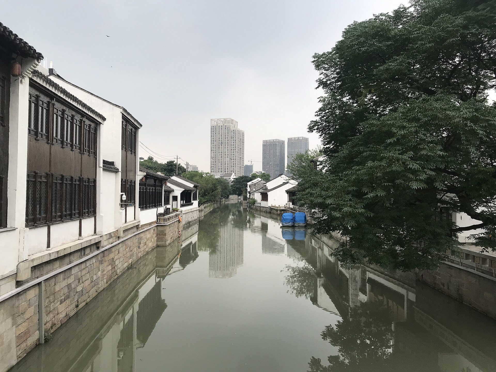
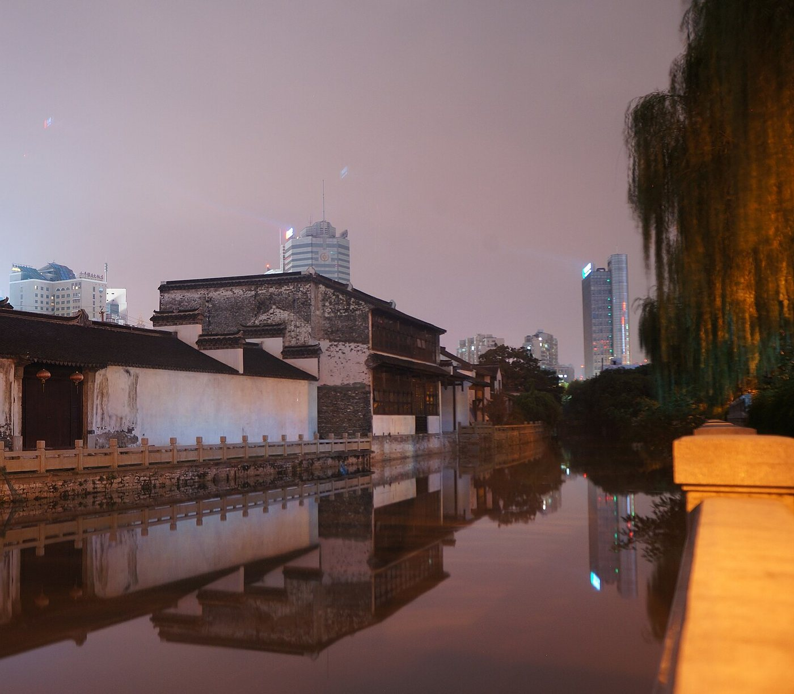
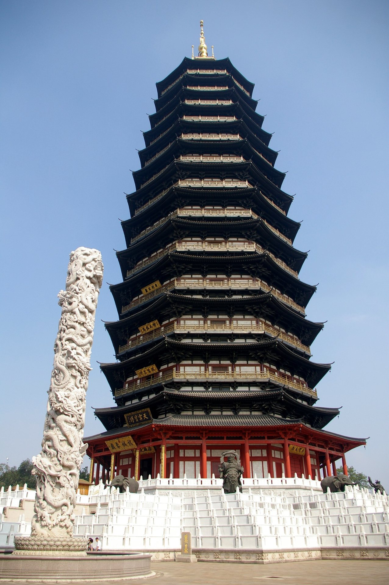

人文古迹
青果巷
沿南市河铺开的老街巷，白墙黛瓦间散落着名人故居，素称「江南名士第一巷」。

江苏 · 常州 CHANGZHOU · JIANGSU
龙城 · 常乐之州
南市河 · 常州老城
向下浏览

01Welcome · 欢迎
延陵 · 毗陵 · 龙城
常州，古称延陵、毗陵，别称龙城，坐落在江苏南部、长江三角洲的腹地：北枕长江，南衔太湖，京杭大运河自西向东穿过老城。青果巷沿南市河铺开，素称「江南名士第一巷」；天宁寺的钟声、文亨桥的月色、红梅公园里的文笔塔，把这座城的记忆安放在寻常巷陌之间。这一页，是我为家乡做的数字名片。
02Profile · 城市名片
一边是运河串起的老城，一边是溧阳舒展的湖山。先认识这座城，再慢慢走进它。
| 所属省份 | 江苏省 · 长江三角洲腹地；北枕长江，南衔太湖，东邻无锡，西接镇江与南京。 |
|---|---|
| 城市性质 | 江苏省辖地级市；上海大都市圈、苏锡常都市圈成员城市。 |
| 行政区划 | 辖金坛、武进、新北、天宁、钟楼 5 个市辖区，代管县级溧阳市。 |
| 古称与别称 | 延陵、毗陵、晋陵、兰陵等；别称「龙城」。 |
| 城市意象 | 大运河与老城巷陌：青果巷、天宁寺、红梅公园、文亨桥；溧阳的湖山：天目湖、南山竹海。 |
| 风味与手艺 | 大麻糕、银丝面、天目湖砂锅鱼头等风味；梳篦、乱针绣等传统手艺。 |
03Explore · 兴趣探索
从古巷走向湖山，或把一个下午留给公园。选择你的兴趣，找到旅程的起点；点开照片，还能看见更多细节。
人文古迹
沿南市河铺开的老街巷，白墙黛瓦间散落着名人故居，素称「江南名士第一巷」。
人文古迹
始建于唐代的禅寺，钟声绵延；寺旁天宁宝塔，是今天老城天际线上最醒目的剪影。
山水自然
溧阳南部的湖山胜处：湛蓝湖面、环湖葱郁；湖畔以砂锅鱼头与茶香闻名。
山水自然
溧阳南部群山间的「竹的海洋」：沿步道走进竹林，也可以乘地面缆车感受山间起伏。
阖家休闲
老城里的园林公园：湖面、步道与园中文笔塔，散步、泛舟、遛娃都合适。
阖家休闲
桥巷相连的运河岸线：旧时「篦梁灯火」的繁华市井，如今适合傍晚散步、看灯影落水。
04Gallery · 影像长廊
随滚动，让照片错落起伏；换一种看法，进入自由漫游的相册。电脑可向任意方向拖动，手机左右轻扫，点开照片细看。
05Flavor · 味道与手艺
酥香的茶食、热汤里的细面、湖畔的一锅鲜，再到一梳一绣的手艺。循着味道与匠心，读懂常州。
DAMAGAO
常州的茶食代表：芝麻铺面、外皮层层起酥，甜咸皆有，配茶正好。
YINSI MIAN
面条细白如丝，汤清而面韧；老常州的清晨，常常从一碗银丝面开始。
SHAGUO YUTOU
天目湖的名菜：湖中鳙鱼头入砂锅慢炖，汤色乳白，鲜而不腻。
COMBS OF CHANGZHOU
素有「宫梳名篦」之誉：从选料到雕绘，一层层手工功夫；旧时篦箕巷沿河铺肆成市，与梳篦渊源颇深。
RANDOM-STITCH EMBROIDERY
由常州刺绣艺术家杨守玉创立：长短不一的丝线交叉叠合，借鉴绘画的光色与层次，以针作笔、以线作画。
从一顿早餐到一件手作，把常州的日常带进旅程。文字资料见文末来源。
06Routes · 路线建议
老城的景点可以连成一条步行线；溧阳的湖山在另一头，值得单独安排。时长只是建议，请按自己的节奏来。
沿南市河慢走，看老宅门楣与水埠头，上午光线柔和。
从青果巷步行可达；在塔院听钟，看宝塔立在老城天际线上。
以红梅阁、文笔塔闻名的园林，收尾在湖边散步。
建议时长：半天至一天。三处都在老城，彼此不远，步行或短途骑行皆可。
溧阳的湖山胜处；湖畔尝一锅砂锅鱼头，再去湖边吹风。
与天目湖同在溧阳南部，竹林步道清凉，适合再留半天。
建议时长：一天以上。两地在溧阳境内，与老城景点不在同一条步行线上，建议单独安排。
07Media · 影音角
都可以点开播放，但页面不会自动出声。
两段影音均使用浏览器原生控件，不自动播放。
08Sources · 资料来源
页面里用到的图片、影音和文字资料，都在这里交代清楚。